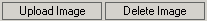

After clicking on the Insert Image button, KTML3 will open a pop-up window to help you select the desired image or to upload a new image to the remote server.
Navigating through files
The pop-up window contains a file navigator
and a configuration area. The file navigator is used to manage the remote
application files and folders and to access local files or folders. The
file navigator will display and will allow you to upload only the supported
file types: bmp, gif, jpeg, jpg, png, swf.
The file navigator has two panels:
- the left panel, which displays the
tree structure of the upload folder, and has two buttons: Make
Folder, Delete Folder;

- the right panel, which displays the contents of the current folder
(the one selected from the tree) and has two buttons: Upload
Image, Delete
Image.

The tree structure shows only the structure of the upload folder. You can set the path to this folder when you configure KTML3.
The navigation through the folder structure is done by double-clicking on the name of a folder from the tree. The navigator will then display the selected folder's contents (including other folders, if the case) in the right panel. When you want to go up one level into the folder structure, double-click on the two points icon displayed on top of the folder list.
To see the contents of the root folder (i.e. the upload folder),
click on the single point icon from the left panel.
In the right panel, the folders are displayed on the top, followed
by the images. The navigator displays the image name and an
image preview. To select
an image, you can click either on the preview or on the name.
The image configuration area
After selecting the desired image by navigating through the upload folder
(or uploading a new image to the remote server), you can set additional
attributes for that image. These attributes can be accessed from the
configuration area below the file navigator.
For the selected image, you can set:
- Full URL – an alternative to browsing to the picture using the file navigator. This is set automatically when you choose a file;
- Alternative text – this text will be displayed by browsers that do not support images. In the most common browsers, this text also appears when the pointer is over the image;
- Alignment – specifies the position of the picture relative to the other page elements. The available options are: Default, Left, Right, Top, Middle,Bottom;
- Border Thickness – enter a value in pixels if you want to display a border around your picture. The default value is 0, that is, no border will be displayed.
- Width & Height – the dimensions of the picture. To keep the image's original size, leave these fields to their default values. You can also resize the picture later, after it has been inserted in the page, by selecting it and dragging the resize handles.
These properties can also be configured later in the Image Inspector
that is displayed when selecting the inserted picture.
Note: You can also resize
the selected picture to a greater size than the original one, but
the quality of the image will visibly deteriorate.
To confirm your settings and to insert the image into the page, click the OK button.
Creating a new folder
You can create new folders on the remote server, in order to better organize
the uploaded pictures. To do that, click on the Make Directory button
and enter the folder name in the dialog window.
The newly created directory is automatically inserted in the navigation
tree. To view the contents of a certain folder, click on its name from the
navigation tree in the left panel. Its contents will be displayed in the
right panel. (The right panel is empty because the folder you have just
created does not contain any files).
Deleting a folder
You can delete an existing folder by selecting it from the navigation
tree and clicking on the Delete Folder button. A pop-window appears, asking
for confirmation.
Replacing an Image
You can replace an inserted picture by another one. First select
the picture that you want to replace and then click on the
Insert Image button. In the File Navigator that is displayed,
double click on the uploaded picture to replace
the old one.